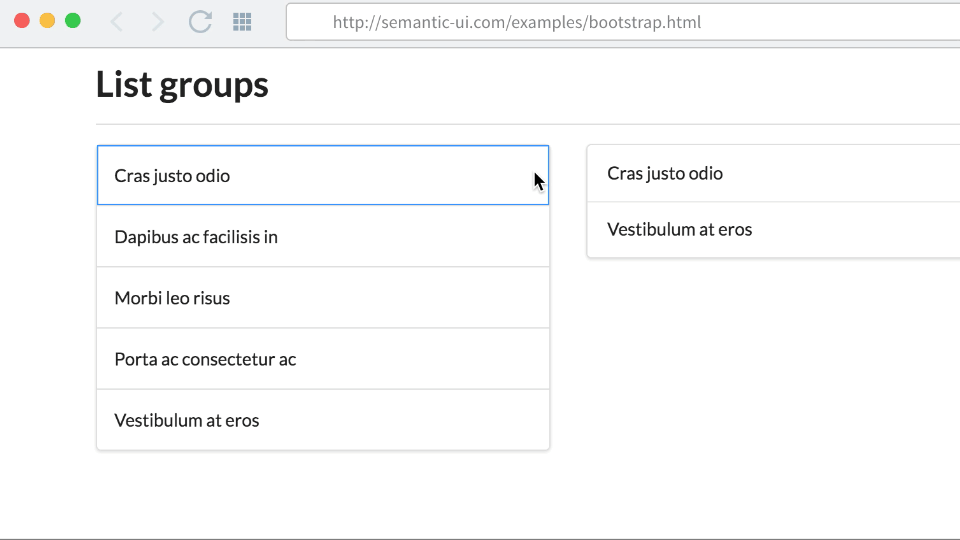

This is the very heart of Finch. The editor gives you the power to edit element style and position.
To edit an element just click on it and make the changes in the editor sidebar.
To select multiple elements at once use click.

click to select unique elements
To select similar elements (e.g. menu elements) first select one of them and then ⇧ click another. Finch will use a smart selector that will select all the other similar elements in the current page.
⇧ click to select similar elements